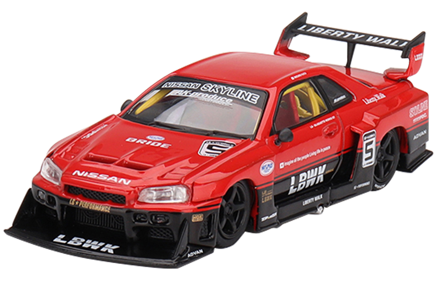
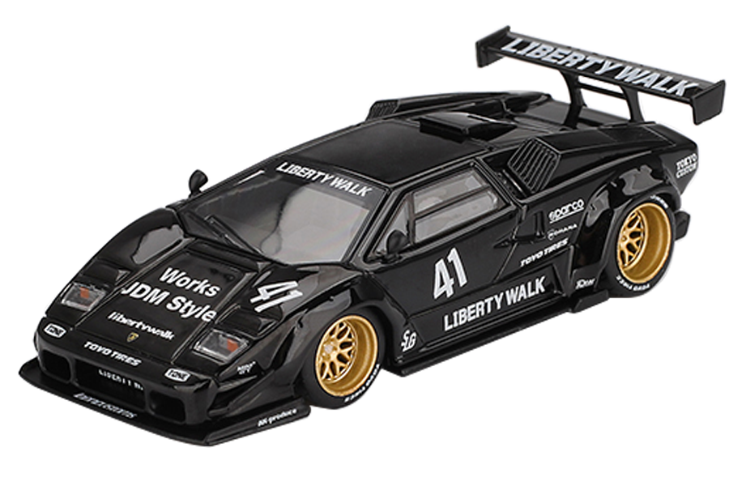

PREMIUM 1:64 SCALE
LBWK COLLAB MODELS
MINI GT x LBWK
SECURE MODEL
Nissan LB-ER34 Super Silhouette SKYLINE
80년대 전설적인 그룹 5 실루엣 레이서 레이블을 현대적으로 오마주한 리버티 워크(Liberty Walk)의 마스터피스. 낮게 깔린 스텐스와 공격적인 LBWK 와이드 바디킷의 역동성을 1:64 스케일에 맞춰 정교하게 축소 시켰습니다.
Full Diecast Chassis
Smooth Rolling Rubber Tires
Perfect Stance & Proportion


MINI GT x LBWK
ADD TO COLLECTION
Lamborghini Countach LB-WORKS
람보르기니의 헤리티지이자 80년대를 풍미했던 쿤타치를 JDM 스타일의 파격적인 볼트온 오버펜더 스타일로 재해석한 커스텀 모델입니다. 로우 앤 와이드(Low & Wide) 스탠스로 모던함과 클래식을 잡았으며, 독보적인 블랙 바디와 화이트 리버리, 골드 딥디쉬 휠의 조합으로 고급감을 더했습니다.
Separate Clear Parts (Headlight)
Low Stance
Gloss Black Paint Finish

